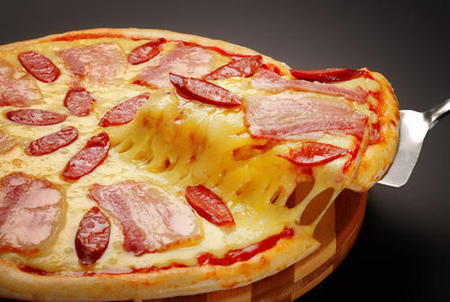
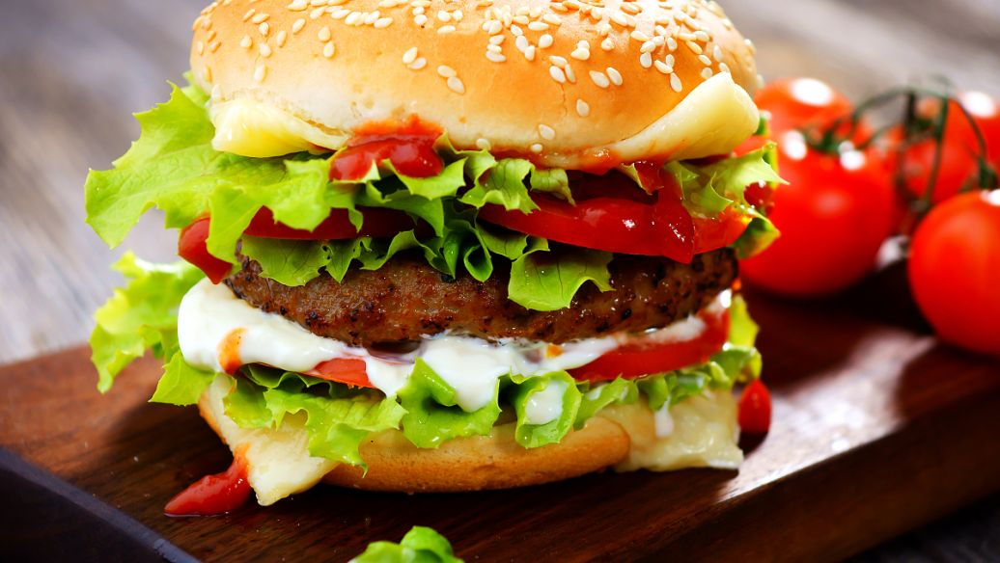
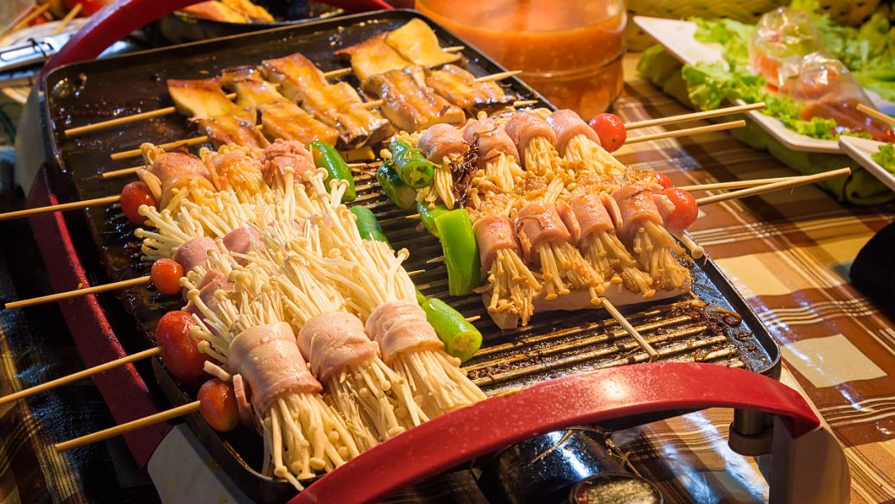
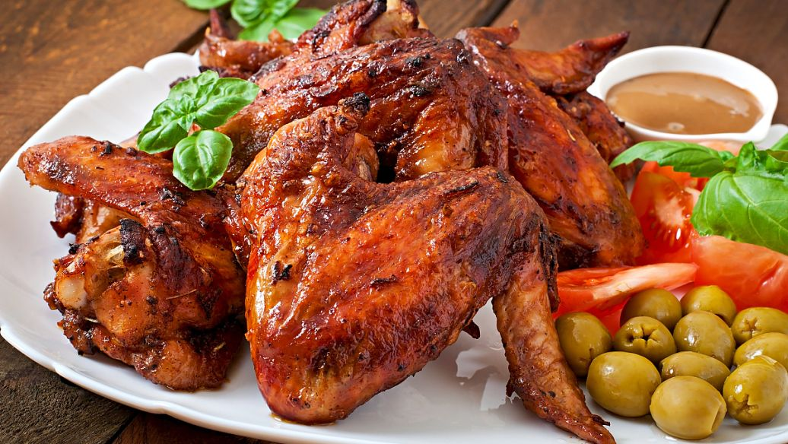
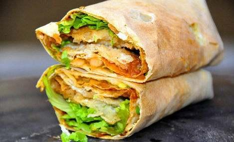
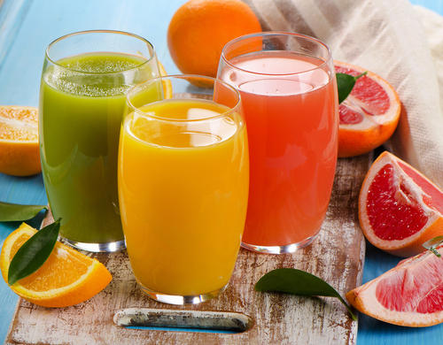

美食展
- 
- 披萨(Pizza)又称为比萨饼、匹萨、批萨、披萨，是一种发源于意大利的食品，在全球颇受欢迎
比萨饼的通常做法是用发酵的圆面饼上面覆盖番茄酱、奶酪以及其他配料，并由烤炉烤制而成。
新版本
- 
- 汉堡包(Frenchfries)是现代西式快餐中的主要食物。
最早的汉堡包主要由两片小圆面包夹一块牛肉饼组成，现代汉堡中除夹传统的牛肉饼外，
还在圆面包的第二层中涂以黄油、芥末、番茄酱、沙拉酱等，再夹入番茄片、洋葱、蔬菜、酸黄瓜等食物，
就可以同时吃到主副食。这种食物食用方便、风味可口、营养全面，现在已经成为畅销世界的方便主食之一。
新版本

- 薯条(French fries)是一种以马铃薯为原料，
切成条状后油炸而成的食品，源起于比利时。是现在最常见的快餐食品之一，流行于世界各地。
新版本

- 意大利千层面(Italian Lasagne)是一种面饼，口味是甜的，
该面饼是用食材番茄酱、牛肉酱、白汁、芝士、面、牛奶、淡奶油、面粉等食材通过烤制而成。
新版本

- 四川火锅 以麻，辣，鲜，香著称，它来源于民间，升华于庙堂，
无论是贩夫走卒、达官显宦、文人骚客、商贾农工，还是红男绿女、
黄发垂髫，其消费群体涵盖之广泛、人均消费次数之大，都是他地望尘莫及的。
新版本
- 兰州清汤牛肉拉面 是甘肃省兰州市的一种风味小吃，
属于西北菜，该菜品也是“中国十大面条”之一，兰州牛肉拉面以“汤镜者清，
肉烂者香，面细者精”的独特风味，和“一清二白三红四绿五黄”，一清(汤清)、二白(萝卜白)、三红(辣椒油红)
、四绿(香菜、蒜苗绿)、五黄(面条黄亮)，赢得了国内乃至全世界顾客的好评。
新版本
- 
- 湛江海鲜料理 是指粤西 广东湛江市的海产品，该地的海鲜以新鲜、质优、价廉闻名遐迩。
湛江也是人们品尝海鲜、购买海产品的理想之地，有“要吃海鲜到湛江”之说。
品尝湛江海鲜以品尝海鱼为主。如，石斑、金仓等，烹饪海产品的方法很多，有水煮、清蒸、红烧、清炖、油炸等
新版本
- 
- 北京烤鸭 是具有世界声誉的北京著名菜式，起源于中国南北朝时期，
《食珍录》中已记有炙鸭，在当时是宫廷食品。用料为优质肉食鸭北京鸭，果木炭火烤制，
色泽红润，肉质肥而不腻，外脆里嫩。它以色泽红艳，肉质细嫩，味道醇厚，肥而不腻的特色。
新版本

- 麻辣烫 是起源于四川的汉族传统特色小吃
麻辣烫可谓是麻辣火锅的前身，也可说是火锅的简化版。
不同的是，把肉和菜都穿在竹签上，吃的时候，将一大把竹签穿起的肉和菜放进翻滚的红汤中，正宗的吃法是一串一串的吃。
麻辣烫与火锅所使用的食材在一般无二，麻辣烫与火锅最大的不同就是简便快捷。
新版本
- 
- 煎饼果子 馃就是油炸食品，在煎饼(加鸡蛋)里裹上油条(天津，河北大部分地区，山东北部的庆云县乐陵市等地称之为馃子)，所以叫“煎饼馃子”。
煎饼馃子是天津人的小吃。它是由绿豆面薄饼、鸡蛋、还有油条或者薄脆的“馃篦儿”组成，配以面酱、葱末、腐乳、辣椒酱(可选)作为佐料，口感咸香，如今的煎饼馃子原料已经不仅限于绿豆面摊成的薄饼，还有黄豆面、黑豆面等等多种选择。但是，天津人依旧坚持着传统的吃法，正宗煎饼果子中选用的食材只有绿豆面、油条以及葱花及其他佐料。
煎饼馃子在早上的早点摊，马路边或者社区里才能见到，小摊主要就是制作和出售煎饼馃子的小推车，制作一套只需几分钟的时间。
新版本
- 臭豆腐 是中国传统特色小吃之一，在各地的制作方式、食用方法均有相当大的差异，有北方和南方的不同类型，臭豆腐在南方又称臭干子。其名虽俗气、却外陋内秀、平中见奇、源远流长，是一种极具特色的中华传统小吃，古老而传统，令人欲罢不能。制作材料有大豆、豆豉、纯碱等。
在中国以及世界各地的制作方式和食用方式均存在地区上的差异，其味道也差异甚大，但具有“闻起来臭、吃起来香”的特点。长沙和南京的臭豆腐相当闻名，台湾、浙江、上海、北京、武汉、玉林等地的臭豆腐也颇有名气。
天津街头多为南京臭豆腐，为灰白豆腐块油炸成金黄色，臭味很淡。南方街头的臭豆腐多以“长沙臭豆腐”为招牌，同样是油炸，但是内部中空且为黑色，臭味更为突出。
新版本

- 辣条 又叫大面筋等，它是以小麦粉或其他谷物,豆类为主要原料做成的一种食品
辣条风迷全世界，特别是它又便宜又实惠,全中国人都爱它，在日本辣条是中产阶级的最爱的食品，在法国辣条曾经是定情信物别人送戒指我就送辣条，俄罗斯辣条好比伏特加，美国更不用说了辣条成为颁奖仪式的奖品，喜欢辣条的国家多的数不过来
真是舌尖上的辣条
新版本
辣条搭配 红酒/白酒/啤酒/可乐/等饮料 会有特殊百分比加成哦！

- 可乐 也称肥仔快乐水，与外国美食搭配更好 是指有甜味、含咖啡因但不含酒精的碳酸饮料。
味包括有香草、肉桂、柠檬香味等。名称来自可乐早期的材料之一：可乐果提取物，最知名的可乐品牌有可口可乐和百事可乐。但是，可乐文化，其内涵太丰富了，远远超出了“喝饮料”的范畴。
与任何"西方主食"搭配可以打出真实伤害
新版本
- 
- 果汁 功效作用方面，柑橘类水果汁，特别是果和橘子汁中的黄酮能有效抑制乳腺癌、
肺癌等细胞的增生。经常饮用果汁也可以有效预防某些慢性疾病、维持心肌功能以及降低血压。研究显示，每天喝3杯果汁可以增加体内高密度脂蛋白(HDL)的含量，
从而降低患心脏病的可能。此外，在服药期间吃一些果子或饮果汁，可增加机体对药物的吸收量，从而使药效加倍。
新版本

- 茶 文化意为饮茶活动过程中形成的文化特征，
包括茶道、茶德、茶精神、茶联、茶书、茶具、茶谱、茶诗、茶画、茶学、茶故事、茶艺等等。
茶文化起源地为中国。中国是茶的故乡，中国饮茶，据说始于神农时代，少说也有4700多年了。直到现在，汉族还有民以茶代礼的风俗。
汉族对茶的配制是多种多样的：有太湖的熏豆茶、苏州的香味茶、湖南的姜盐茶、蜀山的侠君茶、台湾的冻顶茶、杭州的龙井茶、福建的乌龙茶等。
正所谓喝杯茶,下盘棋
新版本

- 咖啡 是用经过烘焙磨粉的咖啡豆制作出来的饮料。作为世界三大饮料之一，其与可可、茶同为流行于世界的主要饮品。
咖啡树是属茜草科多年生常绿灌木或小乔木，日常饮用的咖啡是用咖啡豆配合各种不同的烹煮器具制作出来的，
而咖啡豆就是指咖啡树果实里面的果仁，再用适当的方法烘焙而成，一杯标准的咖啡品尝起来的味道不应该是苦涩的，
一名合格的咖啡师在制作咖啡时会严谨地进行每一步操作，最后为客人呈上的咖啡在味觉上会呈现出不同程度的甜度、酸度、香醇度或是干净度。
新版本
点击进入咖啡时间